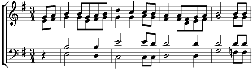

1. S'élancer, labourer sa terre ?
Oublier ses roseaux, ses grèves
Les troncs si nus
Du garder les soupirs
Les larmes au matin ?
Dou dou dou...
Refrain:
Le destin choisira pour toi
Tiens la barre hardi compagnon
Quand la vie s'en va de guingois
Tends la voile, vaillant moussaillon
Ici bas tu n'es que vice-roi
Quant au vent il soufflera sans toi
2. Entends-tu la voix des anciens ?
Vivras-tu auprès de ton chêne
Court le chemin
Ou demain au long cours
Un nouveau départ ?
Dou dou dou...
Refrain:
Le destin choisira pour toi
Tiens le cap, ardent voyageur
Quand la vie s'enrhume quelquefois
Envole-toi, mythique aviateur
Ici-bas, tu n'es qu'un petit roi
Mais là-haut, les vents chantent pour toi
3. Quand enfin, laissant cette vie
Voudras-tu à l'heure qu'on redoute,
Sous terre bénie
Ou encore, vers le ciel, ultime message.
Dou dou dou...
Refrain:
Le destin choisira toujours
Tiens ton cœur au bout de tes bras
Car la vie s'enfuit un beau jour,
Pour chacun sonnera le glas...
Ici-bas tu n'étais pas un roi
Quand au vent, il soufflera sans toi
Coda:
Le destin a choisi pour toi
La boussole a perdu le nord
Quand la vie s'échappe toutefois
Tends la voile jusqu'au prochain port
Ici-bas tu rêvais d'être roi
Mais là-haut, les vents chantent pour toi